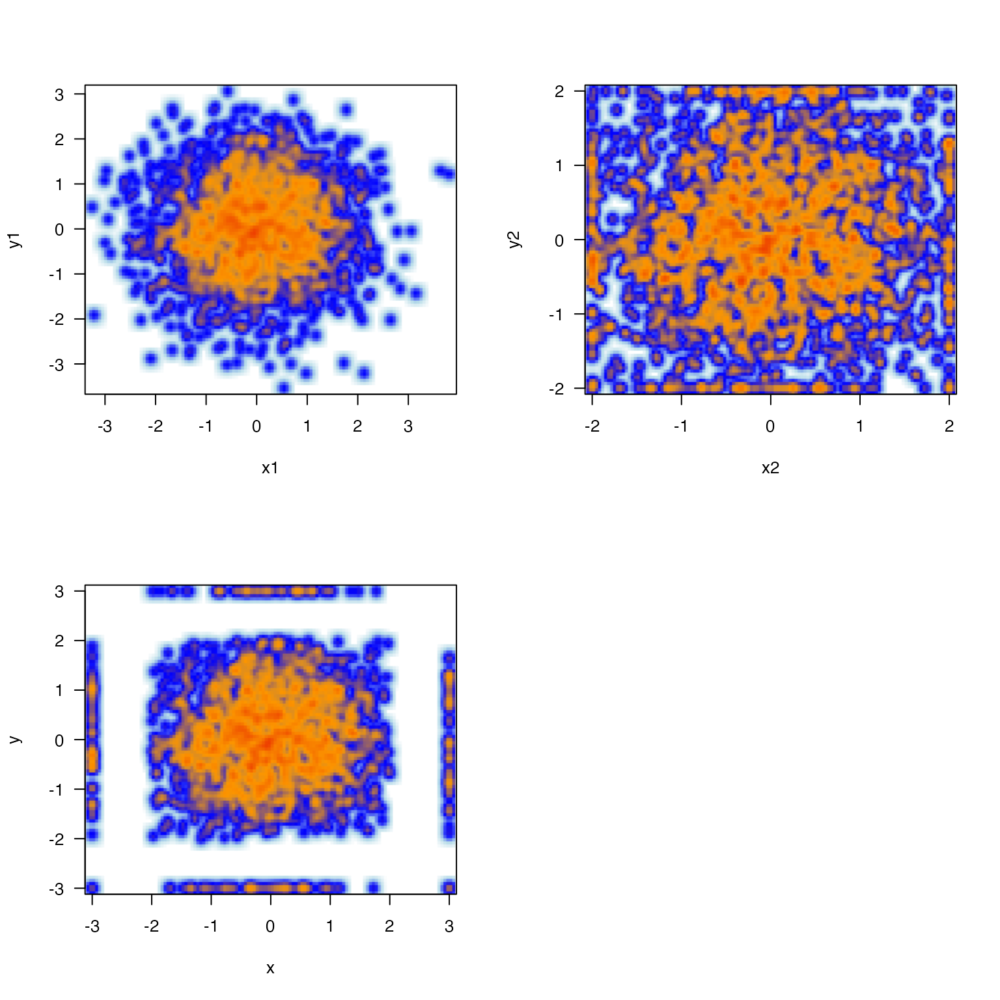

Apply noise floor and ceiling to numeric vector
noiseFloor( x, minimum = 0, newValue = minimum, adjustNA = FALSE, ceiling = NULL, newCeiling = ceiling, ... )
| x | numeric vector or matrix |
|---|---|
| minimum | numeric floor value |
| newValue | numeric, by default the same as the floor value. Sometimes it can be useful to define a different value, one example is to define values as NA, or another distinct number away from the floor. |
| adjustNA | logical whether to change NA values to the newValue. |
| ceiling | numeric value, optionally a ceiling. If defined, then values above the ceiling value are set to newCeiling. |
| newCeiling | numeric value when ceiling is defined, values above the ceiling are set to this numeric value. |
| ... | additional parameters are ignored. |
A numeric vector or matrix, matching the input type x where numeric
values are fixed to the minimum and ceiling values as defined
by newValue and newCeiling, respectively.
A noise floor is useful when detected numeric values are sometimes below a clear noise threshold, and where some downstream ratio may be calculated using these values. Applying a noise floor ensures the ratios and not artificially higher, especially in cases where the values involved are least reliable. This procedure is expected to produce more conservative and appropriate ratios in that scenario.
A ceiling is similar, values above the ceiling are set to the ceiling,
which is practical when values above a certain threshold are conceptually
similar to those at the threshold. One clear example is plotting
-log10(Pvalue) when the range of P-values might approach 1e-1000.
In this case, setting a ceiling of 50 conceptually equates P-values
below 1e-50, while also restricting the axis range of a plot.
The ability to set values at the floor to a different value, using
newValue different from minimum, is intended to allow separation
of numeric values from the floor for illustrative purposes.
Other jam numeric functions:
deg2rad(),
fix_matrix_ratio(),
normScale(),
rad2deg(),
rowGroupMeans(),
rowRmMadOutliers(),
warpAroundZero()
# start with some random data n <- 2000; x1 <- rnorm(n); y1 <- rnorm(n); # apply noise floor and ceiling x2 <- noiseFloor(x1, minimum=-2, ceiling=2); y2 <- noiseFloor(y1, minimum=-2, ceiling=2); # apply noise floor and ceiling with custom replacement values xm <- cbind(x=x1, y=y1); xm3 <- noiseFloor(xm, minimum=-2, newValue=-3, ceiling=2, newCeiling=3); parMfrow <- par("mfrow"); par("mfrow"=c(2,2)); plotSmoothScatter(x1, y1); plotSmoothScatter(x2, y2); plotSmoothScatter(xm3); par("mfrow"=parMfrow);